| Bridging: 4.16 熊本地震被災者と支援者の架け橋 | |
| 山本 和季 | |
| (2018) | |
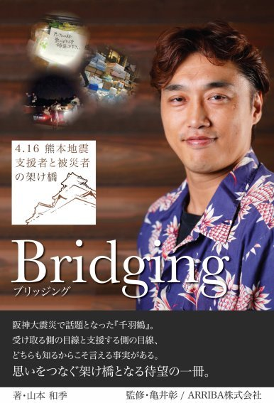
[目次]
・はじめに
・震災を振り返る
・おわりに
・巻末写真集
・あとがき
震災を通じて心から感じたことを時系列に沿って語ることで、ボランティアという『誰かの為の貴重な行為』を、ありがとうの連鎖を生むために、そして悲しい気持ちを生まないために理解してもらうことの一助となれたらと思い筆を取りました。
せっかくボランティアを行うならば、感謝してもらうべきものだし、もっとありがとうと笑顔を生み出すものであってほしい。
逆に、悲しい気持ちになることもあって、被災者と支援者との想いのすれ違いを起こしたくない。
気持ちを届けてもらったのに断らなければならない被災者の悲しい気持ち。
そして勇気を振り絞って支援したのに断られるボランティア側の悲しい気持ち。
この悲しい気持ちが一つでも生まれないように、減らせるように。
ありがとうの連鎖、信頼の連鎖、笑顔の連鎖が一つでも多く生まれる為に。
２０１６年 ４月 １４日
熊本大震災で起こった現実を実体験を元に綴ります。
私達は、出会いや奇跡の巡り合わせの連続で生きている。
改めて当時救いの手を差し伸べて下さった皆様にこの場を借りてお礼申し上げます。
二○一八年 四月吉日
山本 和季
[震災を振り返る]
――本日はお忙しい中お時間頂きましてありがとうございます。
震災から２年が経とうとしているなかで、今日に至るまでボランティア活動や復興支援を継続的に続けていらっしゃる山本さんに当時のお話であったり、支援の望ましいあり方といったお話が伺えたらと思います。――
山本 ボランティアってどんなことがボランティアなのかと、被災者側の気持ちというか。どういうことを求められているのかとか、そういうところを言いたいかな。
――被災者側の気持ちというのは、ボランティアを受ける側ということですよね？――
山本 受ける側・支援側両方共体験したので、堂々と言えるというか。
ボランティアをやってない人が、これダメじゃないと伝えても「実際にやってないじゃないか」とたたかれ、被災者側がこれは嫌ですと伝えても「君は支援してもらってるんだろ」とたたかれる。
言えないのよ。
山本 ブラックすぎてじゃないけど、
「何でお前が言えるの？」
っていう話になる。
両方やった側からじゃないと伝えられないことの方があるんじゃないのかな、と言うのが今回の出版の目的です。
要は被災者と支援側、両方行った人間じゃないと伝えられないことがあるんじゃないのか、という試みです。言いたいことは。ボランティアの成り立ちじゃないけど、本当にして欲しかったことってそこじゃなかったよ、というところも伝えたい
ちょっと時系列から追うと、４月の１６日の１時３８分くらいにもうつぶやいているんですよね。（Facebookに投稿している）
――これって０１時っていうことですよね？朝のというか深夜というか。――
山本 夜中。深夜の１時３８分につぶやいていて、このときは下で店を閉める作業を彼女としていた。
その時に地鳴りが...音が先だった。
音が先で地鳴りがグワッと来て、これやばいわと思ってガスとか全部止めた。そして外に飛び出した。
その時に上の方の、２階の水道管が破裂していて、水がバーっと飛びていているような状態。
雨は降っていなかったが、水が出てびちゃびちゃになっていた。
ちょっと今回やばいな、というのを感じた。
――本震って、前震とマグニチュードで言ったらそんなに変わらなかったですよね？――
山本 変わらなかった。ただし時間が長かった。
――強さは同じくらいだったということですか？――
山本 強さは同じくらいだけど、時間が長かったと思う。
山本 体感的なものもそうだけど。
衝撃じゃないけど、１回緩んでいた地盤もあっただろうし、ダメージもあっただろうから、ひどくなったんだと思う。
その日は店から飛び出して公園にみんないて、辛島公園っていう公園に。
―― 駅前ですよね？新市街（熊本市内の繁華街）の奥の...――
山本 そうそう。
新市街の奥の辛島公園っていうところにみんな出ていて、そこでビルが揺れるっていう状態。
――それは立っているビルが揺れているっていう？――
山本 そうそう立っているビルが揺れている(笑)。
その状態をまざまざと見て、みんなもう震えている状態というか...
――山本さんのお店から辛島公園に行くまでに距離的には時間がかかりますよね？――
山本 距離的には...いや、１００メートルくらいだから...
――アーケードをまるっと１個分抜けなきゃいけないじゃないですか？
山本 そうそう、１個分。
――つまり、その間ずっと揺れっぱなしだったということですか？――
山本 揺れっぱなしだったしアーケードが落ちてきた。
入り口のところの...、ちょっと隅っこの方はアーケードが落ちてきた。
（熊本市新市街アーケード）
サンロード新市街は長さ236ｍ、幅18ｍの大きさを誇る繁華街。
現在は映画館・パチンコ店・スポーツジム・飲食店などがあり、
熊本の娯楽施設が密集している。
近くには交通センターや市電の辛島町電停があり、
多くの観光客で賑わう観光スポットの一つ。
最近では、アーケード内に設置してある、くまモンの植木鉢や
イルミネーションの電飾が、写真撮影の人気のスポットになっている。
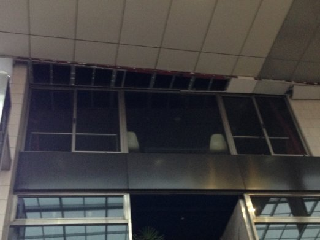
（アーケード崩落の様子）
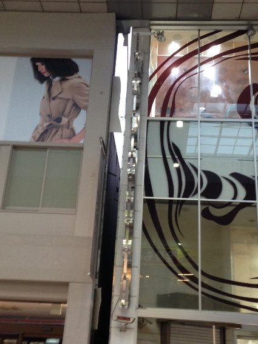
（建物間が離れてアーケードにできた隙間）
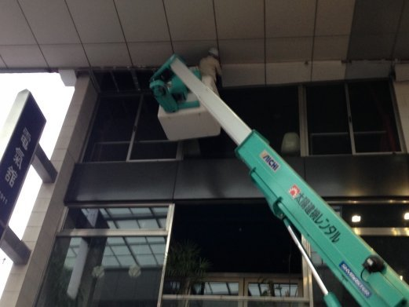
（アーケード修理風景）
――上の屋根がっていうことですか？――
山本 そうそう、上の屋根が。
――それくぐって公園出てみたら、ビルが揺れている状態？――
山本 そうそう(笑)。
揺れている状態。
それで外が安全ということで公園とかにみんな避難していた。
――揺れている時は、外のほうが安全なんですか？――
山本 なんでかというと、みんな建物が落ちてくる危険というか、怖さをすごく体験した。本当にこの屋根が潰れるかもしれない揺れ方だったので、みんな怖くて外にいた。だから野宿の人とかが多かった。あとは車中泊。何故かというと、屋根が落ちてこない安心感があったから。
――なるほど、一度前震を経験しているからということですね。――
山本 そう思っている。あれは本当に体験するとわかるけど、上を指さしながら、この屋根ってやばくね？っていう話。落ちてくるのが怖くて...だからそのタイミングではみんな怖くて車中泊をせざるを得ないというか。そんな感じになっていて、自分たちの飲食店グループの人が朝の４時とかに集まっていた。
お互いを励ましあってね。「頑張っていこう！」って。
でも水はもう売り切れてコンビニとかにはなかった。
――お店自体はやっていたんですか？――
山本 コンビニはまだ開いていた。ライフラインはなかったけど、まだ商品あるしどうぞ、みたいな感じだったし。だからそのときはまだ買えた。
――まだ買えたんですね。つまり、それが無くなってから物資難になったんですね？――
山本 そうそう。なので最初はコンビニにあるし...でも必需品の水からなくなっていく。
アルコールとかビールとかはある。
だからまだその時の食に対する緊迫感というものは、まだなかったよね。
――まだお店に売っているし、ということですか。――
山本 そうそう、なんとかなるし。それでその日にもう熊本を脱出した。
――一度県外に出られたんですか？――
山本 福岡の大牟田の店に帰った。大牟田のおじいちゃんのところに。車で、ちょっと長距離だけども、もう徹夜して朝の６時７分くらいにじいちゃんのところに着いた。全国放送にヤシの樹（山本の経営する飲食店名）が出た。ミヤネ屋さんかな(笑)。
――初のメディア出演を果たしたわけですね(笑)――
山本 水道管が破裂しているところがミヤネ屋さんに出て、これヤシの樹ですって全国ネットに。ヤシの樹が初めて全国ネットに出たのは震災の時だよ。
――ミヤネ屋さんはいつ来たんですか？――
山本 ミヤネ屋さんというかカメラクルーはもうウロウロしていたみたい。
――もう震災の時から？――
山本 震災の時から。
――じゃあ山本さんがいなかった時？――
山本 そう、その看板と、水がバーって流れているところとかを撮られていて。
――それって写真撮っていますか？――
山本 画像あるよ。それはあると思う。ミヤネヤさんの画像はあります。
あと前震のときにお客さんが撮っていた動画もテレビに流れてて。
なのでテレビデビューはその時だった(笑)。
（被災時慌てながら撮影したという排水管破裂の様子）
――テレビデビューされたんですね(笑)。――
山本 料理とかイベントとかでなく別の意味でその後、夕方くらいかな？１２時くらいまでは寝ていたりしていた。昼過ぎくらいにうちのスタッフの子が「山本さん、水運んで来ました！」って言って、仲間にね。
――それはホールの子ですか？――
山本 うん。「大牟田から水持ってきました」みたいなこと言っていて、こいつら頑張りよるねと思った。それでボケッとしている場合じゃないなと思って動き出したのが、昼の１時くらい。
後輩の車屋の社長に「車を、ハイエースを貸して」と連絡した。物資支援するからくれと言ってハイエースを借りた。大牟田の仲間に連絡して物資を集め出し、大牟田の仲間たちがいる「中小企業家同友会」という会と仲がよかったのでその人達が動いてくれた。その人達が「山本さん１０万ありますから、これを使ってください」と１０万円をくれたのと、知り合いの建設会社の今村組の次男に電話して「物資をください」と頼んだら、カップ麺とか紙おむつとかを足早に準備してくれた。
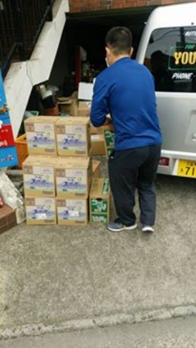
（届けられた支援物資の水）
（カップ麺やティッシュ、水・お茶などの支援物資）
――それじゃあその建築会社の人が？――
山本 そうそう、社長に相談して。あとは酒屋？大牟田の酒屋さん。うちは熊本だけど大牟田の酒屋さんを使っていたので、「水をくれ」と頼んで水をもらった
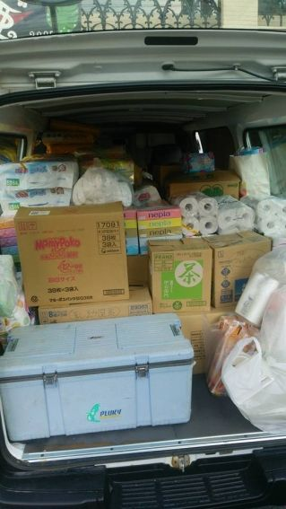
（届いた支援物資の数々）
――これ全部無料でもらっているってことですよね？――
山本 ほぼほぼ全部無料でもらった。あとネット通販仲間の和気文具、キッシーっていう仲間がいて、その人から「山本さん大丈夫？」って言われた。
「大丈夫だよ。ただ大牟田だから物はあるが買い物をする金がない」って言ったら、ネット通販の店長さんや友人のラインを通じてサポートしてくれた。
あとはプロレス研究部のＯＢ会南風会の有志がサポートしてくれたのと、あと九産大（山本の母校・九州産業大学）のＯＢ会の人たち他は数えられないなぁ。
その時はまだ１６日、１７日の週末だったので、だれがどう動いているとかとかが分からなかった。そこから８時４４分に大牟田を出て熊本に行った。
山本 熊本へ行って、益城とかは...１６日はまず仲間内に届けた。益城とかは行ってなくて、自分の知り合いが避難しているところと友人のところへ。なんかみんな避難しているところがバラバラだった。そこへ４箇所くらいかな、物資の支援に回った。その時は自分の持っている金が週末の売上の３７万くらいしか持ってなかった。
――３７万って足りないんですか？――
山本 まったく足りない。物資は貰ったけど弁当とかその他諸々足りないものをバーって買っていって...これが一週間は続くと思った。３７万では自分の仲間たちだけでも全然足りないと思っていた。モノを届けたり色々するので多分足りないだろうなとは思っていた。
ただ一応物資を集めるのもそこで開始した。４月１７日の深夜１時くらいにつぶやいていて...「物資集めます」ということで物資を集めた。明日の朝８時に送るので、必ず届けますので物がある人はくださいと（ＳＮＳで呼びかけた）。それが４月の１７日。
――「物ある人は届けてください」というのは全国的に呼びかけたということですか？――
山本 いや、Facebookの仲間内で呼びかけたので、それを見ている友達とか知り合いとかかな。なので大牟田の人たちとかがその翌日には水とか届けてくれたね。
――近いと言えば近いですもんね。――
山本 近いね。それで４月の１７日の３時とかかな、のり弁を届けた仲間が泣いて飯を食っている写真とかがラインに流れてきた。それでこれは本気で動かなければいかんなと。仲間が泣くくらい腹減ってるというか...のり弁１個だよ？のり弁１個で泣くくらいはらすかしてんだから、これは本当に心細いしきついんだろうなというところ。
――お礼のＬｉｎｅが来たということですよね？――
山本 (泣いている人の)カミさんが、旦那さんが泣いているところを写真で撮っていたんだよね(笑)。
写メ撮ってね、飯食いながら泣いてるよってね(笑)。楽しそうに上がってきたのよ。
――女性の方が強いですね(笑)――
山本 強いね(笑)。それで勇気もらった。本腰入れようって自分の大牟田の店で弁当作りをし始めた。
――大牟田の店っていうのは、山本さんの店って言うことですか？
山本 自分の居酒屋ヤシの樹の原型になった姉妹店。
そこでまず弁当作り。あと物資がバンバン集まってきた。
水とか、あと車がもう一台集まって、弁当が３００個。
――これは弁当作りの資金も、もとの３７万から出しているっていうことですよね？――
山本 ３７万のやつ。もうその時きっちり。払うから頼むって言って動いてもらって、そこのお弁当以外にはほか弁とかにも買いに行った。
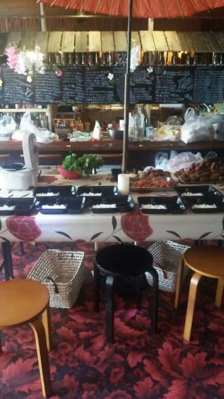
（自身の店で救援用の弁当を作成している様子）
（被災地に送ったお店の弁当）
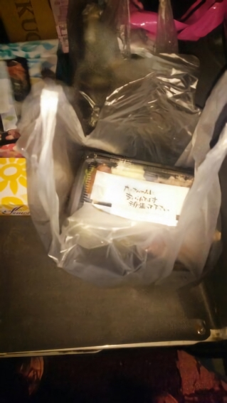
（配達したお弁当）
――別のところで買って持ってきてっていうことですね？――
山本 そうそう。でもそれだけでも結構お金が飛ぶのよ(笑)
――そうですよね。――
山本 その時は現金が実弾だから。もうその時は通帳の数字とかってどうでもよくって、現金をもっている方が大事。
それで出発したのが４月の１７日。
――それじゃ大牟田を拠点に、一回そこでモノを収集してそれから熊本に入ってっていう感じですか？――
山本 そうそう。そうやって集めていて、１７日の夜６時に出発した。
――１８時って言うことですよね？――
山本 そう１８時。ここで先輩たちが物資を持って運びに来てくれたので、そのままその人達をちょっとそこまで感覚で(笑)。
「その車助かります！」とか言って、そのまま支援に連れて行きました(笑)。出発したのが４月の１７日で、その時に益城とかに行った。
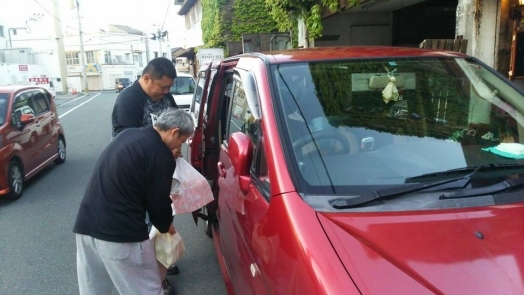
（続々と集まる支援物資）
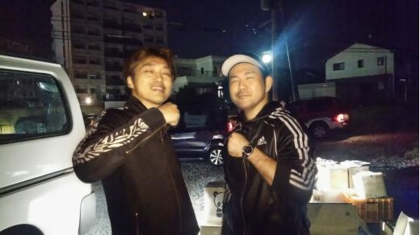
（物資の配達を一緒にした同志）
（同じく一緒に支援活動をした同志）
――それでは、今度は仲間内だけじゃなく、広く一般に支援活動を始めたんですね。――
山本 広く。１８日に益城と、その他諸々のところを１０件くらい探して回ったのかな？
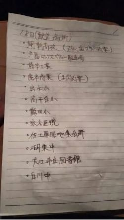
（支援に行く予定のメモ）
――これは回ったというのは、個々のご自宅に配達したということですか？――
山本 じゃなくて、各施設を昼間のうちに全部当たっておいて、何が足りないとかＳＮＳで見たやつを探して、回ろうと思って持っていった。
仲間内の弁当は３０個で足るけど、他にも食べられていない人はたくさんいるだろうということで３００個準備した。トータル１１箇所くらいをＳＮＳでチェックして行った。
――ピックアップして行ったんですね。例えばどんなところに行ったんですか？――
山本 例えば益城、いこいの里でしょ...あとは...
――益城のどこですか？市役所とかですか？――
山本 総合体育館。益城総合体育館にみんな避難していて。
――避難している人が集まっているところに行ったということですか？――
山本 そうそう。でもそれも俺の知り合いの人が益城総合体育館にいた。
――たまたま知人の方がいた、ということですか？――
山本 いたのよ(笑)。それでこれが足りん、あれが足りんというのをそいつが言ってきてくれた。分かったって言って、その時に必要だったのがペットフード。
例えばペットが避難していて、益城はペット受け入れ可の避難所だったので。でもペットの分は無い。ペットフードなんて全然二の次で...
――一人一人が生きるのに精一杯の状況ですもんね。――
山本 そうなのよ。
それでペットフードがない、何々がないというのを聞いて、じゃあ分かった持って行くってなって。
それで、その時に一番嬉しいって言われたのがお弁当だった。
――食べるものが不足していたんですね。――
山本 食うもんないのよ、すでにその時は。
――まだ、本震から翌日ですもんね。――
山本 そう、でもみんなもうダーって集めにかかっていた。それで上益城の老人ホームいこいの里とか、そういったところを合計で３件最初に行った。
ただそこの３件は実は重要度すごい高くて、その後に４件くらい次のがあるからと思って渡せる物資は少し減らしていた。次があるから、それで益城、いこいの里は出発。最後のところはもう何人かしかいなくて。
――そうなんですか？――
山本 ただ益城とかいこいの里とかは年配の方がたくさんいて、物が足りていないのは明らかだったけど、次があるのですみませんって言って回っていた。
ただ朝４時くらいに帰ろうかなと思っていたけど、もう一回益城と総合体育館に持って戻った。結局朝帰ったのが７時くらい。それから物資の寄付貰ったメンバーに頼まれて、「この人のところに届けてください」とかもあった。そこは連絡をとってから直接届けに行った。山ノ内小学校とか、そういうところに運びに行った。
その時に思ったのが情報をＡＢＣって分けようということで、まずは連絡が取れる人がいる、例えば物があって何がない、缶がないという担当者がいるのをＡランク。それで担当の方がいなくて、「これが足りないらしい」というところを、もうＢとかＣランクという重要度にした。下げようと思って。
――情報が正確かどうかが分からないからですね。――
山本 そう、分からんから。
行ってみたら情報と違ったというような空振りをしたくなかったのと、その余裕もなかったので、『誰と連絡が取れるか』をすごく重視した。
チームのみんなにも迷惑をかけず、なおかつ効率的に適切に届けられる仕組みにしておく必要性があった。
時間も人も限られてるから。
だから、そういう形でして行こうということを仲間内で話し合った。
それで１８日の５時５０分にテレビに出ている。「ザ・サンデー」っていう番組にね。
――４月の１８日ですか？――
山本 その５時５０分にね。
――これは１７時５０分っていうことですよね？――
山本 いや、朝。
――０５時５０分、ザ・サンデー...日曜の番組ですか？――
山本 そうそう、日曜日(笑)。ザ・サンデーに出て。
――そこでは山本さんがどう取り上げられたんですか？――
山本 いやもうウチがほら、こんな感じ（写真を提示する）。ザ・サンデーって。
ヤシの樹って(山本の経営する店舗名)
――こんなことになっています、みたいな感じですか？――
山本 揺れてますよヤシの樹さんさんが、みたいな感じで(笑)。
これも全国放送。地下だから怖かったです、みたいなお客さんのインタビューとかあって、出られなくなったらどうしようと思って怖かったですとかね。その放送を見た仲間たちが送ってくれた物資が、１８日がちくわ４００本、水とスポーツ飲料２４０本などetc...
――ちくわは支援に相性が良いんですか？――
山本 なんか子供会が提供してくれたらしくて、たまたまです。
――ちくわってそのまま食べられましたっけ？――
山本 食える食える、大丈夫。
――そのまま食べられるなら調理の手間もなく助かりますね。――
山本 後は綿入りの半纏が２０枚。
――練り物が多いですね？――
山本 いやこれは半纏。羽織るやつ。
――ああ！はんぺんと間違えました(笑)――
山本 宮田織物さんっていう、僕のネット通販グループ楽友商店街の九州部門の仲間たちが動いてくれて、タオル１５０枚、それからペット用フードとか缶詰とかをブルーミングスケープさん、これも通販の仲間たちなんだけど。あと紙お絞り、水、ティッシュとか。
――必需品ですね。――
山本 あと大川家具ドットコムさんが水とか。
あとは、卵の庄店長畠中さんが毎日物資運んで下さって。
ゆで卵５００個っていうのもあった。
――ゆで卵５００個はすごいですね...――
山本 ２０００年くらいからやっているネット通販の大先輩で、俺が可愛がってもらってる畠中さんはずーっと毎回、毎日支援が終わるまで来てくれて。
――何回も来てくれたんですか？――
山本 持って運んでね。
――どこからですか？――
山本 福岡県の飯塚市から、来てくれて。それでその人はネット通販の仲間で来たい人たちをバーっと、もう物資をかき集めてこっちに来てくれたみたいな感じで。
――まさに姉御ですねー。――
山本 姉御なのよ、かっこいい。
――ちょっとまとめると、まず被災時には何が必要ですか？――
山本 この時必要だったのは、食い物。
――まずは、食べ物ということですね。――
山本 この２日間必要だったのは食い物。この後の方で、生活に必要なものが徐々に出てくるんだけど、食い物と水。これ水は精神的に不安だから。
――お水は足りないということはないんですか？――
山本 足りんことはないというか、まあ...あった方が良いよ？あった方がもちろん良いんだけど、何というか...
１日とか、そんなのは保つのは保つのよ、人間として。
――飲めなくても、ということですね。――
山本 保つんだけど、ここに水が全くないというのは、怖いんだよね。人間の精神上。ひねっても出ない、これは怖いよね。ここが精神安定剤な部分をすごく兼ねているなあとは、俺は思った。
――トイレを流す水の確保が大変と聞きましたが、どうでした？――
山本 そう、だから汚い水も欲しい。要は普通の水。
――捨てる用の水ということですか。――
山本 捨てる用の水も欲しかった。だってもうずっとね、トイレが流れないから。なのでそういうところではみんな欲しかったのかな。やっぱり清潔でありたいよねっていうところは、絶対あったと思う。
――最優先順位としては、当初の頃ほど食べ物と水ってことですよね？――
山本 まずは食べ物と水。水は本当に精神安定の部分。食べ物ももちろんあるけども、食べ物はその都度その都度安定して入ってくることが最重要。この頃の避難所は、５人でおにぎり１個とか。
――かなり切羽詰まった状況ですね。――
山本 ちょっと凄惨なタイミングだったので、友達がのり弁で泣いたのはそういうことだよ。家族でもらったのがおにぎり１個だから。それじゃあ自分は食わないけど、お母さんとかに食べさせなきゃいけない。そういう状況で来た食事は感極まる。なので食べ物は、このときは食料あまりなかった本当に。だから一番優先事項は食と水。
――以前おっしゃっていた『おにぎり２０００個』の話はまた別の状況下ですか？――
山本 まだ後。全然後。
ここはまだ食が欲しい時期で、食に対する重要度が非常に高い時期。
――食の重要度が高い期間というのは、１６日の本震から数えて何日くらいがそれに当たるんですか？――
山本 これ今１８日の動き、だからまだ２日目。
――いつ頃から、重要度が生活雑貨系に移転するんですか？――
山本 変わるのはね、ちょっと待ってね...
ザ・サンデーの頃は
...逆転し出すのは...この辺は、１９はまだ全然...
―― ということは３日４日は食事に重要度が寄るんですね。――
山本 重要度は食事だったな。ご飯の重要度が下がるのが...４月２０日超えたくらい。
――被災から一週間くらいは食事ということですね。――
山本 ここは食事。食事やっぱり、はっきし言っちゃうと。ご飯がないところを探し出したのが５日目ぐらい。
――４日目くらいまでは、食料品が最重要ということですね。――
山本 ４日目までかね。４日目までは、食事が優先だった。
５日目ボランティア終了するきっかけになったのがそれなんですよ。
食事が落ち着いた。
――飲食関係の枯渇が落ち着いたんですね。――
山本 あと必要なものが高価なものになってきた。例えば寝るものだったり。――寝具ということは布団とかですか？――
山本 そう、布団とか。なので生命の危機を乗り越えたなと。その、俺達がやめる理由になったのはそこだね。４日目くらいは全然食事。
山本 なので、俺達が考えていたのは物資支援の穴。
避難所がもってる所ともっていないところの差があったので、穴を埋めれば俺達の支援っていうのは大事なところを埋めると言う意味だったので。
そこは逆に１週間戦い切ったら勝ちと思っていた。
――行政が手の届かないところへの細かな対応をしていたんですね。これは少し余談になるかもしれませんが、元々の手持ちのお金は使ってしまったきりということですか？――
山本 そうだね、使い切り。
無くなった(笑)。きれいに無くなった(笑)。
――後日になって 回収できていないんですね。――
山本 回収はできてないよ。
――もう配ったっていう感じなんですね。――
山本 そうそう。ネットの仲間やいろんな方から 月曜日くらいに援助金が来たのよ。
涙ながらに通帳からお金を降ろした。
――すごいですね、援助をしてもらえたと。――
山本 それは最初に言ったキッシー、ネット通販仲間の。
なのでそのメンバーがみんな凄かった。だから全国の人達「どこに寄付すればいいの？」って言う人たちがガバッと集まってきた。
それを握りしめてからは、もうあらゆる弁当屋さんへ、お金あるので先に払いますから買わせてくださいって。
弁当屋さんに言っては「何個作れますか？１７０個作れますか」って言ったらできると言うけど、信用がないからそのまますぐお金持って行って買った。
あとは足りないものとか物資は、大牟田の人には我慢してもらうけども、もう全部熊本の仲間の為と思って、歯ブラシとかそういうもの...
――大牟田の物資を根こそぎ？(笑)――
山本 大牟田は...大牟田はパチンコ屋やっていたし大丈夫かなって(笑)
山本 こっちは地獄絵図。
方やこっちはみんなパチンコをやっているっていう自然平常運転。
ちょっとだけ物が足りないくらい。
じゃあ、ごめん物足りないけど我慢してと、この５日間我慢してと思って、必要物資を大量に買いまくった。
それはもう持っているお金を全部使ってもいいと思って買っていったから、総数はかなりの数になったと思う。
それでその間に子供たちとかを...このときくらい、１９日くらいから基地ができたのよ。１９日くらいに宮城くんって言う子がフェイスブックで頑張って物資の支援をしていた。その子に連絡をとって...
――お知り合いの方ですか？――
山本 ちょっとした知り合いだった。
ただ、あまり深い友人ではなかった。
物資支援していてこいつ熱いやつだな、頑張っているなと思ってそいつに「ちょっと手伝ってくれ」と声をかけた。
そっちで基地を作りたいと。
正直俺はもう物流が限界だという話をしていた時に、よくよく考えたら佐川急便とか物流の会社は拠点があって、そこからドライバーさんが広げていってる。
だから拠点ができれば、俺はここからここに物を持っていくだけでいけるじゃんとなった。
――つまり大牟田が自分の基地、宮城さんが熊本の基地っていう役割分担ですか？――
山本 宮城くんに熊本の基地を作ってもらった。
それでそこに基地を作ったのよ。
それで宮城くんが何をするかというと、そこの仲間を使ってどこに物資が足りないかっていうのを電話してもらって、ここが何個足りません、弁当何個要りますっていうのを全部電話で確認してくれた。
そこで全部情報の取りまとめをしてくれて、それでウチが例えば弁当１３００個いくよ、 １２００個行くよってなって、そっちでそれを振り分けしてくれていた。
こうして、小峯に基地が出来上がったのよ。
――小峯というのは場所の名前ですか？――
山本 小峯っていう地域の駐車場で基地が出来上がった。
――それが１９日？――
山本 それはね、ちょっと待ってね...そうだね、小峯基地は１９日くらいから。１９日くらいに作って...
これがその小峯基地の物資を配っているときの模様。こうやってここにガボッて持ってきて、仲間たちが...６人くらいで良いわって言ったら９人くらいが車で来た。
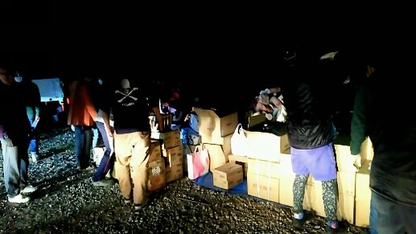
（小峯基地の様子）
――素敵な方々が本当にたくさんいらっしゃいますね・――
山本 結構みんな集まってきた。
こうやって手伝ってくれた人にはなるべく優先で、みんなも家族ともいるだろうからお弁当持って行って、と言う形にした。
９人くらいバーって来てくれて、フロントガラスが割れても来てくれた子とかがいて、それでも その子とかがもう配送センターなのよ。
それでもう一気に、「どこどこ行ってきます」とか、「どこどこ行きます」みたいな感じで行ってもらって。
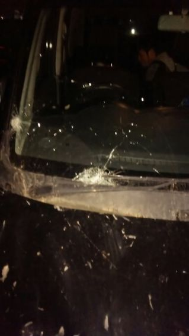
（フロントガラスが割れているのに駆けつけてくれた仲間）
山本 これで形ができたと、支援の網ができたのが１９日。
その時はもうお金があったから、「みんな、お金の心配はしなくていい」と。
すごい後援が付いたから、もう何が必要とかを全部こっちに言えと伝えた。
大牟田にあるものでみんなの必要なものは全部買ってくるからって言って動いた。
それで病院とか、その他諸々のところで連絡が取れる人を優先にして動き出したので、情報の精度がすごく上がったし、その中のメンバー、２０人くらい、がフェイスブックのメッセンジャーを利用した。
というのは変な支援をする子たちがいたから。
それはなにかというと昔の情報をシェアしたりとか。
――古い情報を拡散していた、ということですか？――
山本 そうそう、シェアしているのよ、その子達にとっては助けているつもりなんだよ。
自分はこれシェアしたからっていうことで。
だから、そういった間違った動きをしている子たちをわざと呼んで（ＳＮＳ上で自分たちの活動しているグループに招待して）
「ちょっとこの中に入ってメッセージ見て、どんな動きしているか見て」と伝えた。
山本 今そういうシェアするのは違うよと。
こういうことでみんな困っているからそれはやめよう言って、その子達にはこのフェイスブックグループの会話の流れ全てを見せた。
ＬＩＮＥと違って良いところは、後から入った人が過去のやり取りを見られるから。
――ＬＩＮＥは過去ログ見られないですね。――
山本 フェイスブックメッセンジャーは過去ログが見られるから。
ちょっとどんな動きするか見ててっていう話ができて、やっと支援の形がわかりましたっていう仲間を徐々に増やしていった。
ＳＮＳでの発信をすごく絞った。
――この古い情報をシェアしたり拡散したりしていた子っていうのは、山本さんは知らない子ですよね？――
山本 いや、知っている子。
仲間内で知っている子だったのですぐ連絡して、ごめんこれはよくない、支援をする側になると困るからよしてっていう風に伝えた。
他にもおにぎり事件とか現場案内して電話とか、とにかく支援じゃない支援に困らされることが多かった。
――おにぎり２０００個事件ですか？――
山本 そう、２０００個事件があったのはいつだったかなあ...。
２０００個事件があったのはほぼ終盤、２０日くらいだったと思う。
山本 ２０日の夜の１１時過ぎに２０００個持ってきていた。
持って来ただけで、現地で配送はどうするのっていう。
自分の仲間たちも避難所の人たちも、もうみんな寝ていて、それを起こしておにぎりあげるって言って食わせられるか？っていう話なんだよね。
他には、おにぎり以外に
「お水を田崎市場の方に２トン持っていきました。どうしましょう？」
みたいな感じで持って来たけど、それ以降がノープランだった。
つまり、物資支援を投げっぱなしなんだよね。
山本 なので出口がない支援が多くて、俺がその支援中に対応した電話って１日３００本から４００本くらいかかってくる。
LINE、電話、Facebookからかかってきて、支援しました、連絡からいっぱいあるんだけども出口がない人たちも多い。
例えば支援に行きたいけどそこは安全ですか？とか(笑)。
被災地だからね、安全じゃないですよ。そこのホテルどうですか、道はどうですか、あとは今度の土曜日行くんですけどすることありますか、何をしましょうか...。
もうその日その日が勝負なので、次の日にはすることも変わっている。
だから動きたい人たちは、体一つで行くことができるならば、どこでしているっていうのを聞いて行ったほうが早い。
――その日その時その場所で必要なことを手伝う方が良い？――
山本 その時必要なことをやってあげた方が、俺は良いとは思う。
自分は完璧にしたいから、わざわざその人から情報を得ますって言う形は、物資支援とかをバーってしている人たちにとっては逆に邪魔というか、ノイズでしかない。
そこに対する、なんだろうなあ...。
１人俺に切れた人がいたんだよね。
山本 物資支援していて用事をバタバタ入れている時に、
「今度の土曜日に来る人は大事な社長さんなので、その人をサポートするために行けって言われたので連絡しました」と。
「いやごめん、今忙しいので」って言っても、
「そこが安全かどうか確かめないといけないので、そこを話させてもらっていいですか？」
って言ってくるので、「いや今それどころじゃないので」、と伝えた。
そうしたら、
「支援してやろうとしているのに」
とブチ切れ出した。
だからいやごめん、要らんし来てもらわなくて良いと(笑)。
山本 支援はそういうことじゃないよと思ったし、その時のその人に対しての対応とか、憤ったことは今でも間違っていないと思っている。
俺達から言うその方にとっての大事な社長さんのことは知ったことじゃない。
だけど
してやっているという感覚でものをするのならやめた方がいい
。
例えば何が必要かっていうのは場所によって違ってきて、千羽鶴でもちゃんと置く場所があれば必要なのよ。
鶴を飾る場所があって、千羽鶴を見ることで和みます、じゃあ街のここに飾りましょうねという形での支援であれば千羽鶴でも良い。
だけども、千羽鶴を折ってきました、どうしましょう？そっちで探して置いてくださいっていうのは支援じゃない。
山本 そこら辺を勘違いしている人たちがすごく多くて、それを
「おかしいよ、もっと大切なこと有りますよ」
って言うのは、俺達じゃないと言えないことなのよ。
自分が被災して、だけど仲間を支援している人たちじゃないと言えない。
なので、支援は必ず出口を見つけて始めから終わりまで。
そうしないと、丸投げされた人にはその作業負担がまるっとのしかかることになって、せっかくのありがたい厚意が悲しいものになってしまう。
――阪神大震災のときも、三宮市が千羽鶴の処理に２８００万かかったという話があります。支援する側にもあり方が求められる気がします。――
山本 また自分ひとり用とか言って箱に色んなモノを混ぜて送る。でもこれまた仕分けしなくちゃいけないし、手間がかかる。
――ティッシュならティッシュ、水なら水、ということですね。――
山本 そうそう。そうしないと非常に手間がかかるんだよ。
それを知らないで、ずーっと俺に「これ溜めたから」って言って、箱のダンボールセットみたいなのの写真をLINEで送ってきた友人がいた。
これ今から送るねって言われて、いや、それなんかあったとき自分で使いなさいと、そう言うしかないよね。
山本 だから必要なタイミングで必要なものを配送センターで送るのかでも全然違うんだけども、近くだったらパッと行って１時間から２時間以内に届けることが、俺は支援だと思う。
必要なタイミング、必要な時期に、必要な物をちゃんと送らないといけない
な、というのが支援だよね。
物資支援の大切な部分だよなと思っている。
山本 なんだろうな...「してあげている」事に対して断ることで疲弊する人たちが、結構いる。
おにぎり持ってきてニコニコしてさ。
届けに来ましたって言っている人に、
「ごめん要らんのよ」という言葉をいっぱい言わなければならない人たちがいる。
その盾になっている人たちって凄い心を疲弊する。
山本 だってみんな良かれと思って、ニコニコしてやっているのを断られたっていう辛さ。
１番はそのタイミング、必要なタイミングに必要なことができるのは、多分震災があったところから１時間圏内の仲間たちとかだと思う。
本当にお金を支援したい、寄付したいって言うなら、そこの被災地域の友達とかに電話して、口座教えろって言ってそいつのところに１万なり２万なり、できる範囲でいいから送ってやれることの方が現地の人たちはすごく助かる。
ちゃんと配らないかもしれないとか、被災地の支援に使ってもらえないって心配しなくてもそんな状況じゃないから。
山本 ほら、なんかどこどこの基金に集めていたって、配るのは何％だからとかそういうことでこだわるならね。
すぐ聞いて、パンっと送ってやれることの方が俺は支援だと思うし。
勘違いしないで欲しいなとは思う。ずれてないと思うから。
何％しか還元しないって、それは物資支援している人たちもそうだけど、全部が全部ただではできないわけよ。
配ったり、支援もそうだけど。でもそれを何％しか行かないとか、それはユニセフとか色んなところがあるけど...費用は掛かるよ維持するためのあるよそれは(笑)。
山本 ただじゃないんですよ組織づくりも労働も、とは思う。
長く続けるためにはそういう費用のところも必要だし、ダイレクトにやりたいというのであれば、一番最初にやることはそこ。
友達のところに電話して、どうやと、そりゃ売上も下がるよねって、それなら送るわって。
友人にすぐ電話して、お金を３万とか４万とかパンって送ってやることの方が、早いから。早いしそれが支援だろうな、とはリアルに思うかな。取りまとめて配る暇があるのであれば。
山本 だからウチらが将来的に作りたいのは、災害時にすぐに送ってあげられる基金とネットワークの構築。
たとえば、ネット通販だったら全国にみんないるわけだから、災害が起こった時にその被災地から２キロ圏内で信用できる人たちにすぐにお金を送る。
その人達のマンパワー使って配れるのは２，３００万が限界だよ。
だから、２，３００万をスコンとその瞬間に渡せる基金なら最高じゃないかと思う。
俺達ができたことは、多分みんなできると思うし。ゴールはそこだよね。
――山本さんの考えややりたいことは分かりました。あとは、被災地に知り合いがいない人で支援を送りたい人、現地でお手伝いがしたい人、それが多分千羽鶴になったりおにぎりになったりしているじゃないですか？
その人達はどう動くのが良いと思いますか？――
山本 素直に、それこそ基金だろうね。
――ユニセフみたいなところを活用するということですか？――
山本 ユニセフじゃなくても、適切に配ってくれるものを活用すればいいと思う。
山本 ただ、いかんせん歴史のない基金は怖いなと思う。
一応バックボーンを調べることはして欲しいけども、どうしてもそういう人がいない場合は、いる人に聞いたほうが良いと思うけどな。
友達でその地域に知り合いがいる人とか多分いると思うから。そこに対して渡すとかその方が一番いいと思うよ。
――誰か知り合いの補佐によって、と言う事ですよね？――
山本 そう、知り合いの補佐によるよね。
ツテも何もないボランティアの方もいたけどね。俺達みたいにしている人たちもいれば、自分一人だけでボランティアで行って...
――身体が資本です、みたいに自分の体一つでボランティアにということですか？――
山本 いや、金稼ぐためだけにその益城避難地域のエリアを乗っ取ってしまうくらいの強引なボランティアもいたみたいだし。
ボランティアも質があるというか。
俺は突然もらった信用というか、昔の信用があったからできたけど、それがない人たちではできない部分もあると思う。
――間違いないですよね。だからこそ、この答えは出しておく必要があると思います。――
山本 信用？
――いえ、知人が現地にいないからボランティアしたくてもできない・やり方わからないってなる人に、一つの考え方であったり答えを提示してもらえたら一番いいな、と。――
山本 出すなら、赤十字社とかやっぱり歴史があるところじゃない？
新興でバーっと立ち上がったところより...
――モノよりもお金の方がベターということですか？――
山本 お金のほうが良いと思う。
だって必要なものって時々で変わるから。
それがお水やご飯のこともあれば、布団や暖房器具であったりと時間の経過と共にその時々で必要なものは変わっていくから。
もちろん、物資の届き方やどれくらいの人数がその地域にいるのかっていうのによっても必要なものや逆にいらないものっていうのが変わる。
山本 あとはやっぱり、何をするにも圧倒的に人手が足りないから人手として現地に行くのはかなり助かると思う。
でも、
「道は通っていますか？」とか
「ホテルって営業していますか？」とか
「そっちは安全ですか？」
って問い合わせてくるのはやめてほしい。
常に携帯が鳴っていて、常に誰かと役割分担してやってるから。
山本 だから、とりあえず行く。現地で何したらいいか、その場で聞いてその場の労働力になろうっていうその日その時その場所で必要とされることに対応する形で現地にいっちゃうか、それが難しいなら何かの基金に気持ちを届けるのがいい。
――行って労働力になれるか、なれないか。行けるのであればその時必要なモノを持っていけばいいし、必要なものは正しい情報が取れるならばそれを揃えればいい。
できないのであれば、裁量を委ねられる先にお金を届けるのが一番いいボランティアの形、ということですね。――
山本 ちゃんとしたところを探して。どんなに時間がかかってもいいから。
――まわりに縁がなかったら、そういうちゃんとしたところに適切に振込をすると。――
山本 うん、だってその方、今はご縁がないんだから。
ご縁がある仲間たちは絶対に救わなければならないと思うけど、ご縁がない人たちをどこまでどうできるかと言うと、うーん...逆に、俺はそれを言うなら、今までご縁をもらってサポートしてくれた人たちに返すよね。
――基本はやっぱりそうですよね。全然知り合いでもないのにお金を渡します、ってなかなか聞かないですよね。――
山本 ない。
――そう思うと結局は縁や人との繋がりなのかな、と思う部分は確かにありますけど。
やらなきゃいけない、やりたいって思っている人のように正義感を持っている人にはやっぱり適切な、ちゃんとしたところを通してやってもらいたいですね。――
山本 やってほしいな、と思うし。自分もキャンプファイアー(クラウドファンディングのサイト名称)でコミュニティを作ってこれから大きくしていこうと思ってる。
そういう形で頑張っているやつ、支援しているやつ、ちゃんと考えているやつのアンテナを貼っておく必要があるんじゃないかな？
――ボランティアや支援に興味を持っているのであれば、日頃から情報を集めておく姿勢が必要だということですね。――
山本 ボランティア、支援をする人はちゃんとした情報。
基金や団体、個人でも、活動をしている人たちが「ちゃんとやっている」っていうのが分かる、信用のできる人っていうのを知っておく必要があるよね。
そして、やる側だったり支援を能動的にやっていく人には信用調査は要るよね。
――いかに正しい行動と情報を世の中に伝えて行くのか、という使命がありますね。――
山本 この震災で本当にたくさんの人の支援と気持ちを受け取ることができたし、それをいろんな人に届けることができた。
いつもいつも、本当に多くの人に言葉にできないくらいお世話になってるけど、こうして幸いにもいい人に恵まれて一緒にいられることの恩返しに、そんな人たちが何か困った時すぐに支援ができる基金を立ち上げるのが夢。
その第一歩としてキャンプファイヤーのコミュニティだったりを盛り上げていけたらなって思ってる。
[おわりに]
〜おわりに〜
ボランティアは本当に尊いもので、そこには必ず何かの想いがある。
作中取り上げさせて頂いた方で悪い人は誰もいない。
「支援してあげたのに」そんな言葉を言った方にも何かしらの想いがある。
しかし、その一方で、時間も体力も疲弊している現場の声もある。
いろんな想いが集まって、支援をする人・受ける人という関係性を形成しているが、何が正しいかなんて答えは永遠に出ないだろうと思う。
本書では、関わる全ての人たちを含めた『私たち』が、このタイミングではこう感じ、このタイミングではこう感じたという様々な人の心の模様をなるべく素材のままに掲載をするようにした。
生の声、生の姿、ありのままの姿を徹底的に意識した作品を届けられるよう心がけることで、ボランティアという活動の本質に至るための一助となれたらと願います。
最後に、ボランティアで動く姿は最高にかっこいいし、褒められて欲しいし、感謝されて欲しい。
だから、震災という極限状態における、瞬間瞬間に何が必要かを想像し、そして創造してもらえるきっかけになれば、私たちにとってはこの上ない幸せです。
本書を出版するにあたり協力して頂いた仲間に感謝し、支えてくれた天国にいる、祖父山本誠一と祖母山本ヨシ子に捧げます。
南国食堂ヤシの樹 会長
熊本個室焼肉 誠実一心 褐火 会長
株式会社 くませれ 代表
山本 和季
【巻末写真集】
お届けしたお弁当
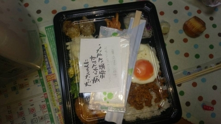
益城に朝６時に届けた物資
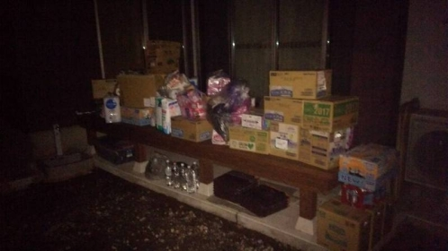
紆余曲折を経てようやくたどり着いた瞬間
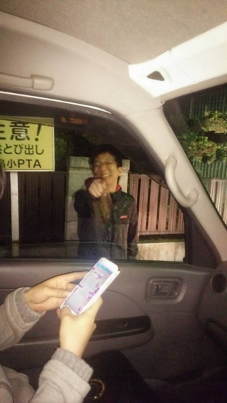
ようやくたどり着いて物資を渡した瞬間
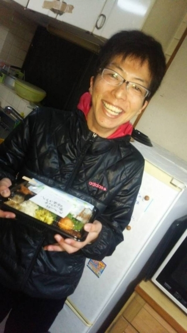
南国食堂 味亜（福岡県大牟田市常磐町１-８）にて弁当作成風景
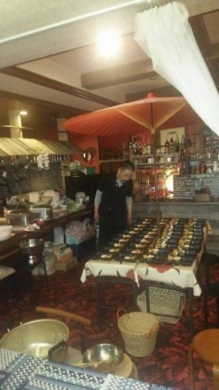
雨の為、新市街アーケードにて基地を構えた際の風景
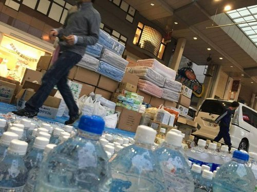
震災後も定期的に訪問を欠かさない宮崎織物 吉開さん
毎月欠かさず熊本に来て一緒に楽しく飲める 湯浅さん
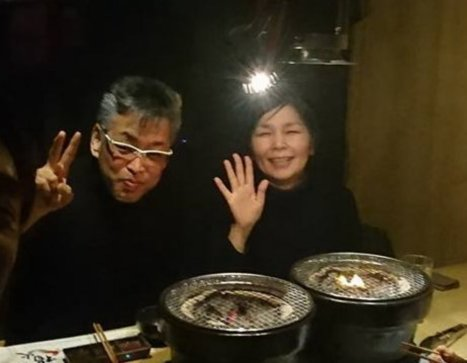
物資支援ミーティング風景
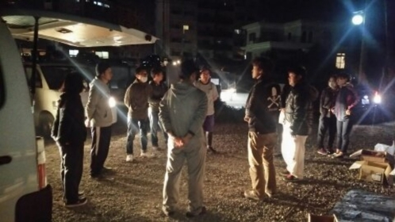
物資支給風景
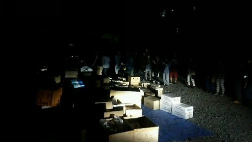
物資取り込み風景
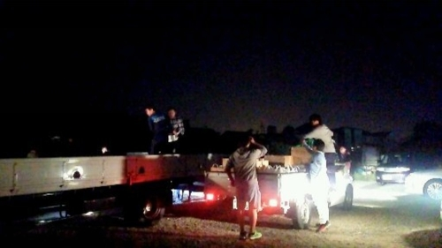
益城にて
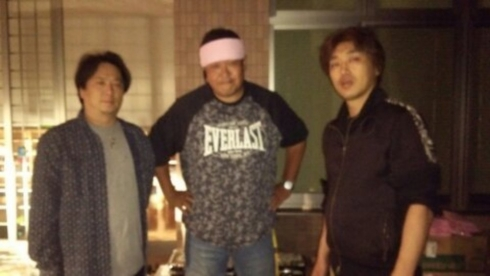
物資支援期間中に店舗を片付けに来てくれた飲食店の仲間
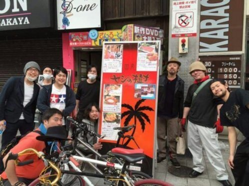
物資を届けてくれた後輩
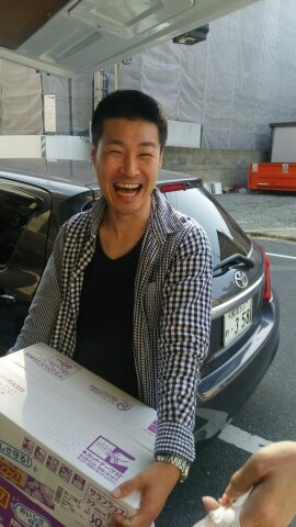
ワキ文具 キッシーこと岸井 祥司(右)と熊本の起業家仲間大塚君(中央)
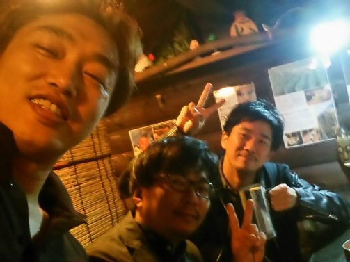
支援後半表情
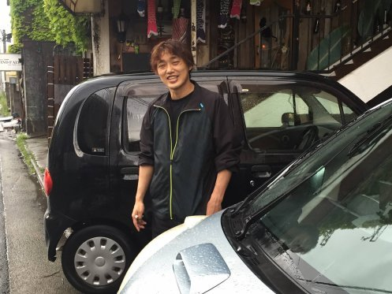
本当に皆様ありがとうございました
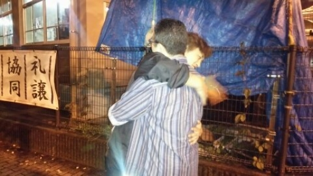
そして、共に苦難と戦った熊本の仲間たち。
いつ何時でも、何かあったら支え合えるようこれからもよろしくお願いします。
苦しい時、辛い時、いつ何時でもこうして手を差し伸べてくれる人の存在のありがたさを噛み締めつつ、今後ますますの努力と成長をしていけたらと思います。
最後になりましたが、熊本の震災は未だに終わってはいません。
そして、いつどこで同じように災害が起きて多くの人が辛い思いをするかわからない。
そんな熊本のこれから、そして有事の際の備えにと思い立ち上げた、私の支援コミュニティを応援頂けましたら幸いです。
熊本支援コミュニティ
〜あとがき〜
こんな素敵な方達に囲まれて、たくさんの人に手を差し伸べてもらえて、本当にありがたい環境に感謝すると共に育ててくれた祖父と祖母への「ありがとう」をこの場を借りて述べさせて頂けたらと思います。
「じいちゃん、ばあちゃん、ホントにありがとう」
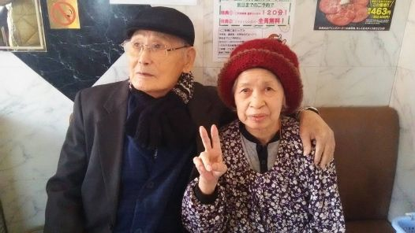
（故 山本誠一、ヨシ子）